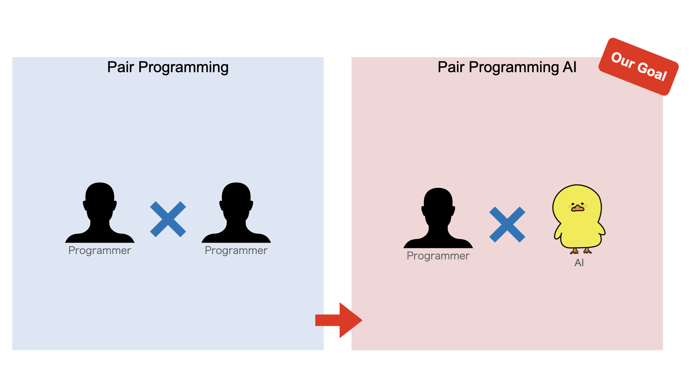
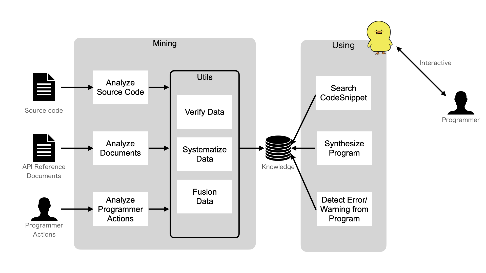

Pair Programming AI Concept
We introduce the Pair Programming AI concept.
Background
Today, the number of products (home appliances, smart phones, cars, etc.) with built-in computers continues to increase. The software that controls the computers is critical to running these products. Software is becoming increasingly complex and large-scale, and it is said that there is a shortage of software developers. In such a situation, software developers in the field are facing various difficulties. The following is an example.
- I have taken over a project from my predecessor, but the specifications and design documents are insufficient and I cannot understand the source code.
- There are no specifications or other documentation, only source code.
- The number of skilled developers is limited, and the number of days until delivery is limited.
Our Goal
Our goal is to make it possible to develop software efficiently in a short time with less burden on developers.We also want to create an environment where developers can concentrate on their creative work.
To achieve this goal, we are focusing on a development method called "pair programming". Pair programming is a method in which two developers work together to develop a single piece of software. The software developed by this method tends to be of high quality, but the development cost increases. Therefore, we aim to realize the "Pair Programming AI" that extracts and provides the know-how of professional developers from specifications, source code and so on.

Concept
The "pair programming AI" can assist in the design, implementation, and verification of software, just as if an experienced software developer were standing next to you to help you. The following is a list of skills of the pair programming AI.
- Code Reading: understand what the program is writing.
- Coding: assists coding by having knowledge about programming.
- Developer behavior and thinking: Understand the developer's development style and be able to identify and advise on points that are often overlooked.
We think that pair programming AI has the advantage of being less costly and more readily available than pair programming.
Approach to realize Pair Programing AI Concept
As shown in the figure below, the basic approach of Pair Programming AI is to extract knowledge from software specifications, design documents, and source code, process and organize them, and provide them to developers in an easy-to-use method. 